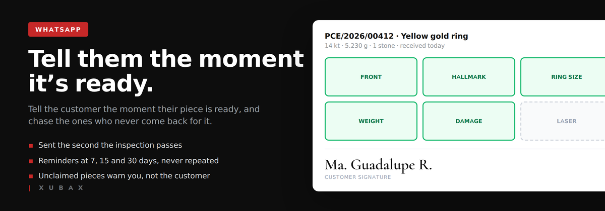
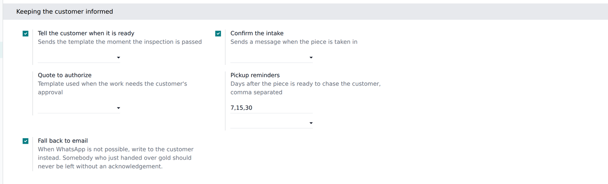

The customer is told the moment the inspection is passed, and reminded on the days you choose — never twice for the same reminder. When a piece crosses your abandonment limit, nobody nudges the customer: an activity lands on your desk, because what happens next is a decision with legal weight, not another automatic message.
Every WhatsApp template has to be approved by Meta against your own business account, so no module can ship them. You pick the ones you got approved: received, quote to authorise, ready, reminder.
No phone on file, template not configured, Meta refusing the send: it is written on the record and the delivery goes ahead. Nobody is left holding a ring because a message bounced.

You choose which of your approved templates goes with each moment, and on which days the reminders go out.
Requires Jewelry Repairs & Workshop and Odoo's WhatsApp app (Enterprise).